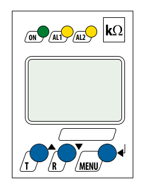

Hardwarekonfiguration
Diese Kapitel erläutert die Einrichtung der zentralen Hardware-Komponenten der Ladesäule und der Leistungselektronik. Eine korrekte Konfiguration ist erforderlich, um eine stabile Ladefunktion sowie sichere Kommunikation zwischen den Modulen und Steuergeräten sciherzustellen.
Ladecontroller vSECC
Der vSECC ist die zentrale Steuereinheit der Ladesäule. Er verarbeitet:
- Die Kommunikationsprotokolle zum Fahrzeug
- Den Datenaustausch mit dem Backend
- Die CAN-Kommunikation mit den Powermodulen
- Die Sensor- und Sicherheitssignale.
Damit diese Funktionen zuverlässig arbeiten, müssen die DIP-Schalter exakt so gesetzt werden wie vorgesehen.
Die DIP-Schalter auf dem vSECC sind wie in der Abbildung einzustellen.
Abbildung
Einstellungen der blauen DIP-Schalter
Diese Schalter steuern ausschließlich die Terminierung der Busleitungen. Eine korrekte Terminierung sorgt dafür, dass die Signale auf dem CAN- und RS485-Bus stabil bleiben und keine Reflexionen auftreten.
Tabelle : Die 3 blauen Schalter – Schaltzustand links = EIN / rechts = AUS
| Schalterposition | Funktio | Einstellung |
|---|---|---|
| Links | CAN1-Terminierung | EIN |
| Mitte | CAN2-Terminierung | EIN |
| Rechts | RS485-Terminierung | EIN |
Einstellung der schwarzen DIP-Schalter
Die schwarzen DIP-Schalter konfigurieren die Verlustdetektion einzelner Signalleitungen sowie die GB/T-spezifischen AC- und DC- Verlustprüfungen.
Tabelle : Die 4 schwarzen Schalter - Schaltzustand oben = EIN / unten = AUS
| Schalterposition | Funktion | Einstellung |
|---|---|---|
| Links | PP1 Deaktivierung der Verlusterkennung | EIN |
| Mitte links | PP2 Deaktivierung der Verlusterkennung | EIN |
| Mitte rechts | CC1 Deaktivierung der AC-Verlust-Erkennung (GB/T) | EIN |
| Rechts | CC1 Deaktivierung der DC-Verlust-Erkennung (GB/T) | EIN |
Isometer isoCHA425HV
Die beiden Isometer überwachen permanent den Isolationswiderstand des DC-Systems. Ein zu geringer Isolationswert kann auf gefährliche Fehler hindeuten, weshalb diese Geräte ein sicherheitskritischer Bestandteil der Leistungselektronik sind.
Die Konfiguration erfolgt vollständig über das integrierte Tastensystem (Abbildung 2-1).

Abbildung -
Die Menübedienung startet immer mit einem langen Druck auf die „Menü“-Taste (>1,5s).
Menü „out“
Das Menü out steuert alle Relaisfunktionen und Kommunikationsparameter der IMDs.
Zugang:
- „Menü“ >1,5s drücken → Einstellungen öffnen sich
- Einmal „R“ drücken → Menü „out“ wird angezeigt
- Einmal „Menü“ drücken
Relaisarbeitsweise r1 & r2:
- Anzeige Relais r1 (Kontakt 14)
- „n.c.“ einstellen und bestätigen
- Einmal „R“ drücken → Anzeige Relais r2
- „n.c.“ einstellen und bestätigen
Meldezuordnung Relais r2:
- Zweimal „R“ drücken → Anzeige „r2“
- „Menü“ drücken → Anzeige erster Parameter „Err“
- „off“ einstellen und bestätigen
- Einmal „T“ und bestätigen → Anzeige „r2“
Modbus-Adresse:
- Zweimal „R“ drücken → Anzeige „Adr“
- Adresse gemäß Tabelle 2 einstellen und bestätigen
Modbus-Baudrate:
- Einmal „R“ drücken → Anzeige „1Adr“
- „9,6k“ einstellen und bestätigen
Menü verlassen:
- Zweimal „R“ drücken → Anzeige „ESC“
- Bestätigen und zweimal „T“ → Anzeige „ESC“
- Bestätigen → Anzeige „Hauptbildschirm“
Menü „SEt“
Im Menü „SEt“ wird festgelegt, wie das Gerät den Isolationswiderstand überwacht.
Zugang:
- „Menü“ >1,5s drücken → Einstellungen öffnen sich
- Dreimal „R“ drücken → Menü „SEt“ wird angezeigt
- Einmal „Menü“ drücken
Auswahl:
- Einmal „R“ drücken
- „dc“ einstellen und bestätigen
Menü verlassen:
- Zweimal „T“ drücken → Anzeige „ESC“
- Bestätigen und viermal „T“ → Anzeige „ESC“
- Bestätigen → Anzeige „Hauptbildschirm“
Powermodul Huawei R100040G2
Jedes Leistungsmodul stellt eine Leistungsstarke, einzeln ansteuerbare Ladeeinheit dar. Damit mehrere Module sicher parallel betrieben werden können, benötigt jedes Modul:
- Eine eindeutige Adresse
- Eine eindeutige Gruppennummer (Gruppe 1 oder 2)
Ist die Adresse eines Moduls doppelt vergeben, zeigt das Modul Fehler E05 an.
Das Einstellen erfolgt über zwei frontseitige Tasten:
- Taste „Links“:
- Zum Navigieren in dem Menü (min. 0,25s)
- Zum Ändern der Position des Stellenwerts der Einstellung (min. 0,25s)
- Zum Auswählen und Bestätigen der Einstellung (min. 3s)
- Taste „Rechts“:
- Zum Navigieren in dem Menü (min. 0,25s)
- Zum Erhöhen bzw. Verringern des Einstellwerts (min. 0,25s)
- Zum Auswählen und Bestätigen der Einstellung (min. 3s)
Einstellen der Hardwareadresse
- Mit „Links“ oder „Rechts“ zu „Adr“ navigieren
- Lange eine Taste drücken → Menü öffnen
- Adresse einstellen → blinkende Stelle zeigt aktive Stelle an
- Lange eine Taste drücken → Einstellungen speichern
Einstellen der Gruppennummer
- Mit „Links“ oder „Rechts“ zu „GrP“ navigieren
- Lange eine Taste drücken → Menü öffnen
- Adresse einstellen → blinkende Stelle zeigt aktive Stelle an
- Lange eine Taste drücken → Einstellungen speichern